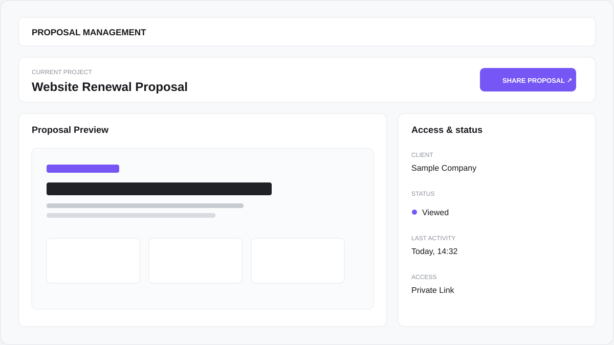
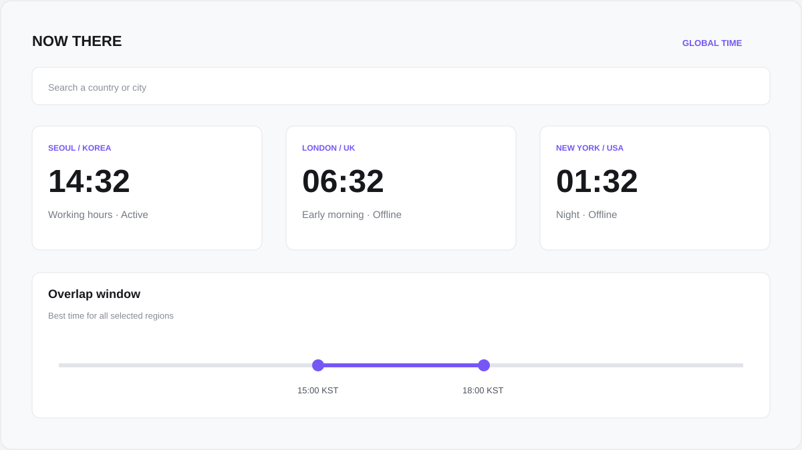

01 / BUSINESS SYSTEM2026
NINEWORKS CRM
클라이언트, 계약, 프로젝트와 제안서를 한 곳에서 관리하는 에이전시 운영 시스템.
SELECTED WORKS
기업 웹사이트부터 내부 업무 시스템까지, 무엇을 만들었는지 한눈에 볼 수 있는 사례를 선별했습니다.
클라이언트, 계약, 프로젝트와 제안서를 한 곳에서 관리하는 에이전시 운영 시스템.

제안서 공유, 접근, 열람 상태를 웹에서 관리할 수 있도록 만든 내부 도구.

여러 국가의 현재 시간과 업무 가능 시간을 빠르게 비교하는 글로벌 타임 대시보드.

공간의 브랜드 경험과 예약 흐름을 하나의 웹사이트로 연결한 구축 사례.
AESOST CONCEPT SYSTEMS
실제 비즈니스에서 활용할 수 있는 구조를 가정해 AESOST가 직접 기획·디자인·개발한 시스템입니다. 각 제품은 용도를 먼저 설명하고, 소개 랜딩에서 기능을 이해한 뒤 전체 데모로 이동합니다.
WHAT WE BUILD
보이는 화면뿐 아니라 사용 흐름, 관리 방식, 데이터 구조까지 실제 운영을 기준으로 만듭니다.
기업·브랜드·서비스 웹사이트
관리자·CRM·업무 대시보드
예약·회원·MVP·내부 서비스
API·데이터·업무 자동화
YOUR PROJECT
웹사이트나 시스템이 필요하다면 현재 필요한 기능부터 알려주세요.